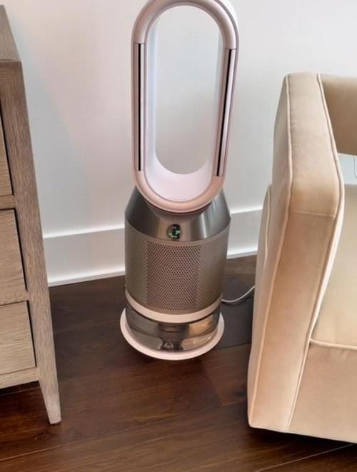

戴森 PH04 加湿净化风扇

戴森三合一旗舰环境电器，净化、加湿、循环扇集于一身，H13 HEPA 整机密封过滤配合催化分解甲醛滤网，无雾加湿经 UV 杀菌后送出。适合空调房与干燥季节，一台解决空气质量、湿度与空气循环三大问题。
客观评测
PH04 采用 H13 HEPA 整机密封过滤，配合催化甲醛滤网持续分解甲醛，加湿采用无雾蒸发式并经 UV 紫外线杀菌。官方不公布 CADR，以整机密封循环口径标称适用空间。实测夜间睡眠档安静不扰眠，加湿均匀不打湿地板，出风口无白雾与白粉问题。约 5L 水箱在中等湿度环境下可支撑整晚，App 可实时查看温湿度与颗粒物数据并自动调节档位。
主观点评
南方冬天开空调、北方暖气房，干燥与空气质量问题一台机器全兜住，房间角落终于不用摆三台设备了。加湿是无雾的，桌上不再有一层白粉，晚上开着睡觉几乎听不见声音。当然价格确实让人犹豫，滤芯也不便宜；但对母婴家庭或对空气质量敏感的人来说，它把呼吸这件小事照顾得很周到，属于买了很少后悔的旗舰环境电器。
优点与不足
- 一台顶三台，净化加湿循环扇不再堆满房间
- 无雾加湿不喷白粉，UV 杀菌减少水箱异味
- 催化分解甲醛不消耗滤网寿命，长期使用省心
- 六千多元售价高昂，后期滤芯更换成本也不低
- 加湿量有限，超大空间或极端干燥时杯水车薪
参数规格
| 类型 | 加湿净化风扇（净化 + 加湿 + 循环扇） |
|---|---|
| 颗粒物 CADR | 官方未公布（H13 HEPA 整机密封过滤） |
| 甲醛处理 | 催化剂滤网持续分解甲醛为水与二氧化碳 |
| 加湿方式 | 无雾加湿，UV 紫外线杀菌后送出 |
| 水箱 | 约 5 L |
| 滤芯 | H13 HEPA + 活性炭 + 催化甲醛滤网 |
| 风感 | Air Amplifier 气流倍增，整屋空气循环 |
| 噪音 | 睡眠档低至约 40 dB(A)（约） |
| 智能 | Dyson Link App，实时监测并联动调节 |
| 操控 | 遥控器 + App |
| 功率 | 净化模式约 50 W（约） |
| 尺寸 | 约 320 × 401 × 923 mm（约） |
| 重量 | 约 8.5 kg（约） |